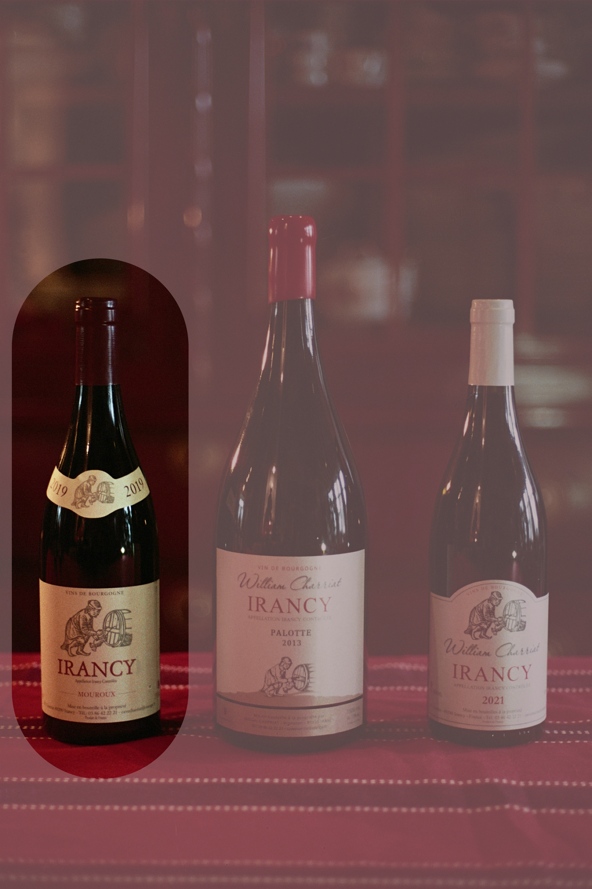
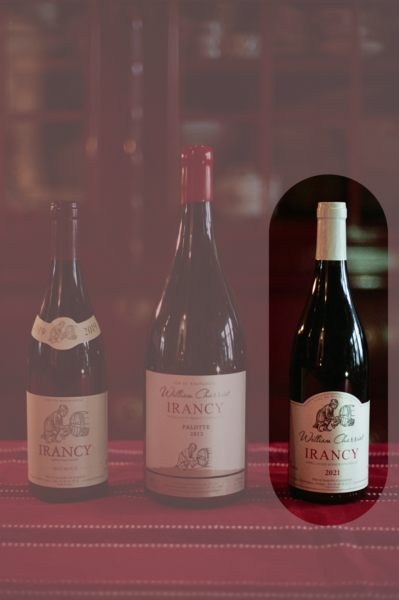

Irancy
Bourgogne - Pinot noir en een klein beetje César op kalksteen en klei. Bewaarwijn.
Rosé

William Charriat
Bourgogne Rosé 2023
William Charriat
| Appellation | Bourgogne |
| Vintage | 2023 |
| Stijl | Fruitig en vol |
| Bodem | argilo calcaire |
| Druivenras | 99% Pinot Noir 1% César |
| Aroma's | Kers, Framboos, Pompelmoes |
| Opvoeding | inox |
| Bewaarpotentieel | 3-4 jaar |
| Serveren | 8 - 10 °C |
| Alcohol | 13% |
| Prijs | €16 |
Een volle, donker gekleurde rosé met aroma’s van framboos, kers, pompelmoes en florale toetsen. In de mond heeft het redelijk wat structuur die door de zuren gecounterd wordt en een lichte bitterheid die blijft hangen. Doordat de rosé iets voller en gestructureerder is dan de meeste rosés, kan deze niet enkel met een slaatje maar ook met iets zwaardere gerechten gedronken worden, zoals bij een BBQ, zolang het maar geen steak is. Een rosé die al naar een rode wijn opgaat!
Klik of tik om meer te lezen ▴
Rood

William Charriat
Mouroux 2019
William Charriat
| Appellation | Irancy |
| Vintage | 2019 |
| Stijl | krachtig, kruidig, fijn |
| Bodem | Klei |
| Druivenras | 91% Pinot Noir 9% César |
| Aroma's | braam, leder, sous-bois |
| Opvoeding | gebruikte eiken vaten |
| Bewaarpotentieel | 10-20 jaar |
| Serveren | 16 - 18 °C |
| Alcohol | 13% |
| Prijs | €29 |
Deze Mouroux 2019 is afkomstig van één zuidelijk georiënteerd kleiterroir, wat zorgt voor een krachtige en geconcentreerde wijn met veel karakter. De assemblage bestaat uit 91% Pinot Noir en 9% César, waarbij de César extra structuur, kruidigheid en bewaarpotentieel toevoegt. De wijn heeft een diepe donkere kleur en een intense neus van zwart fruit, leder en kruidige toetsen. In de mond is hij krachtig en vol, met duidelijk aanwezige tannine die zorgen voor een uitzonderlijk lange afdronk. Het droge en warme wijnjaar 2019 geeft de wijn extra rijpheid en concentratie, zonder zijn fraîcheur volledig te verliezen. Een echte terroirwijn met diepgang en bewaarpotentieel, ideaal bij rood vlees, wildgerechten en traag gegaarde bereidingen.
Klik of tik om meer te lezen ▴

William Charriat
Irancy 2021 & 2022
William Charriat
| Appellation | Irancy |
| Vintage | 2021 & 2022 |
| Stijl | Fruitig, kruidig, fijn |
| Bodem | Argilo calcaire |
| Druivenras | 97% Pinot Noir 3% César |
| Aroma's | Kers, peper, sous bois |
| Opvoeding | gebruikte eiken vaten |
| Bewaarpotentieel | 5-8 jaar |
| Serveren | 16 - 18 °C |
| Alcohol | 13 &13,5% |
| Prijs | €22 en €23 |
Deze Irancy wordt op traditionele wijze gemaakt waarbij de steeltjes mee vergisten, wat zorgt voor extra structuur, tannine en een mooi bewaarpotentieel. Deze Irancy wordt op traditionele wijze gemaakt waarbij de steeltjes mee vergisten, wat zorgt voor extra structuur, tannine en een mooi bewaarpotentieel. De assemblage bestaat uit 97% Pinot Noir en 3% César, een typische druif uit de appellatie die extra kruidigheid en karakter toevoegt. De Irancy 2021 is afkomstig uit een fris en vochtig wijnjaar en toont zich klassiek en elegant. De wijn heeft een lichte robijnrode kleur met aroma’s van frisse rode vruchten en subtiele kruidige toetsen. In de mond zorgen fijne tannines en een levendige aciditeit voor een mooie fraîcheur. De Irancy 2022 komt uit een warmer en droger jaar en heeft daardoor een donkerdere kleur en een rijper aromatisch profiel. Hier vinden we rijpe tot licht gekonfijte rode vruchten terug, ondersteund door fijne tannines die zorgen voor lengte en structuur. Beide wijnen combineren elegant fruit met fraîcheur en een minerale toets, waardoor ze uitstekend passen bij gevogelte, charcuterie en verfijnde vleesgerechten. Ze kunnen gemakkelijk nog 5 tot 8 jaar liggen, afhankelijk van uw smaak.
Klik of tik om meer te lezen ▴